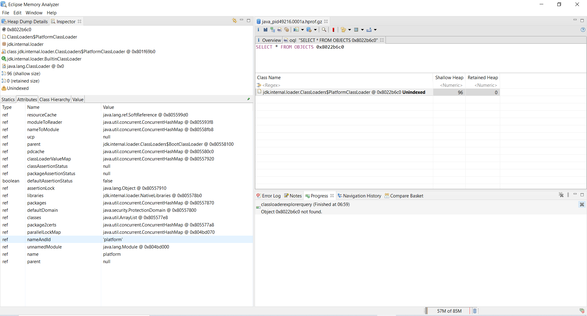

The FROM clause defines the classes on which to operate.
Specify the class by one of the following means:
SELECT * FROM java.lang.StringSELECT * FROM "java\.lang\..*"SELECT * FROM 0x2b7468c8SELECT * FROM 0x2b7468c8,0x2b74aee0SELECT * FROM 20815SELECT * FROM 20815,20975SELECT * FROM ( SELECT *
FROM java.lang.Class c
WHERE c implements org.eclipse.mat.snapshot.model.IClass )
The statement returns all objects in the heap. The
implements
check is necessary, as the heap dump can contain
java.lang.Class
instances caused by proxy classes or classes representing
primitive types such as
int.class or Integer.TYPE.
The following query has
the same effect, which calls a method directly on
the ISnapshot object:
SELECT * FROM ${snapshot}.getClasses()
Use the
INSTANCEOF
keyword to include objects of sub-classes into the
query:
SELECT * FROM INSTANCEOF java.lang.ref.Reference
The resulting table contains, amongst others,
WeakReference and SoftReference objects because both
classes extend from
java.lang.ref.Reference
. By the way, the same result has the following query
SELECT * FROM ${snapshot}.getClassesByName("java.lang.ref.Reference", true)Use the OBJECTS keyword if you do not want to process the term as classes. Specify the object or objects by one of the following means:
by class name:SELECT * FROM OBJECTS java.lang.StringThe result is just one object, the java.lang.String class object.
by the object address of the particular object:SELECT * FROM OBJECTS 0x2b7468c8SELECT * FROM OBJECTS 0x2b7468c8,0x2b746868SELECT * FROM OBJECTS 20815SELECT * FROM OBJECTS 20815,20814SELECT * FROM OBJECTS (1 + ${snapshot}.GCRoots.length)SELECT v, v.@length FROM OBJECTS ( SELECT OBJECTS s.value FROM java.lang.String s ) vSELECT v,v.s,v.val FROM OBJECTS ( SELECT s,s.value as val FROM java.lang.String s ) vFROM OBJECTS term is in
the test phase!
SELECT * FROM OBJECTS 0x2b7468c8outbound()
inbound()
dominators()
dominatorof()
classof() does work
with unindexed objects.
See how unindexed objects appear in the inspector view when retrieved by OQL. Note the warning triangle and the Unindexed in the inspector view top panel, and the Unindexed suffix in the object view. The retained size is 0 as the retained size is not calculated for unindexed objects. 
The OQL pane now has autocompletion for class names, class name regular expressions, field names, attributes and methods. See OQL autocompletion.